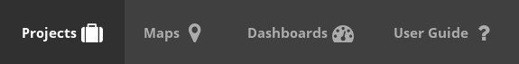

Landing Page¶
The Landing Page is a interface that was built to facilitate the daily use of Truffala Plataform.
Note
Its designed to become like a game console interface, enabling the user to do quick tasks and easily get informations and reports.
Basicaly, on Landing Page, you’ll work with this four buttons:
